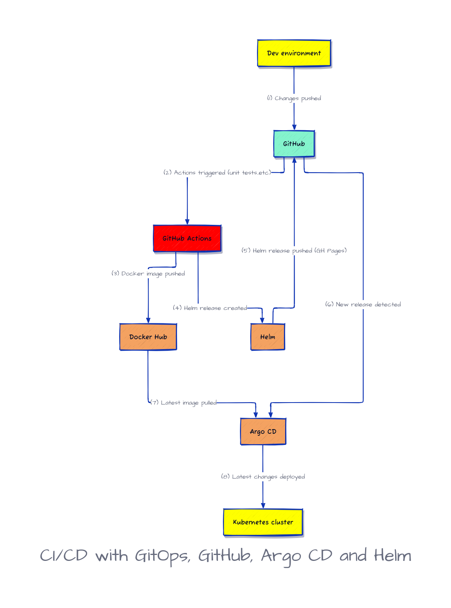

This repository was used in Cloud Native Microservices with Kubernetes Book. It explains how to setup a full CI/CD using GitOps principles and tools like GitHub Actions, Helm, Helm Chart Releaser, Argo CD and more.
The created pipeline looks like this:
